01
Discover something new ↗
A WORLD OF INDEPENDENT SOUND
Discovery without the clutter
Browse trending tracks and playlists, search artists, and follow a sound wherever it leads.
A considered place to find your next repeat, take control of the queue, and keep the tracks that stay with you.

LumaMusic is built around the small moments that make listening yours: finding something unexpected, shaping what plays next, and returning to a track you saved last week. No noisy dashboard. Just the essentials, with room to breathe.
Made for focused listening, with a growing set of thoughtful controls.
Browse trending tracks and playlists, search artists, and follow a sound wherever it leads.
See what's next, move tracks around, remove a song, or clear the deck.
Keep favourites, create personal playlists, and revisit your listening history on your device.
Adjust playback speed, set a sleep timer, and use shuffle, repeat, and seek controls.
LumaMusic currently discovers and streams eligible tracks through the Audius platform. That means an independent catalogue, not a mirror of Spotify or Apple Music. Availability depends on the track, source permissions, and the Audius service. We don't scrape other platforms or promise songs the source doesn't provide.
Learn about Audius ↗Read how the app works, what it stores, and the rules around using it.
These pages describe the current project as it exists today. They are not a substitute for legal advice. Policies must be updated before adding accounts, analytics, payments, advertising, or new data processors.